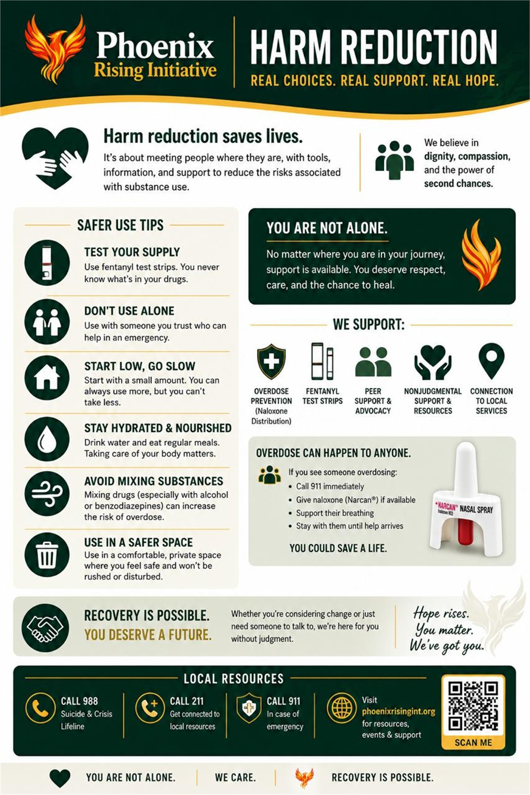
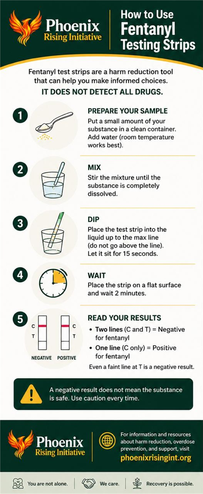
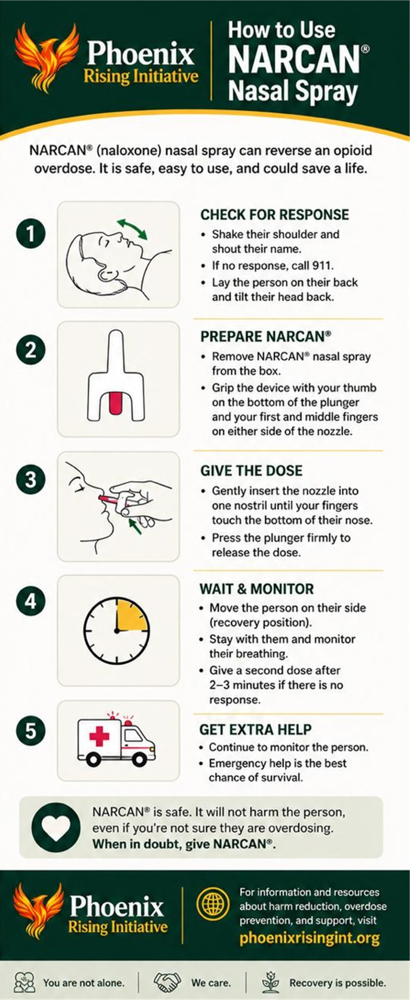
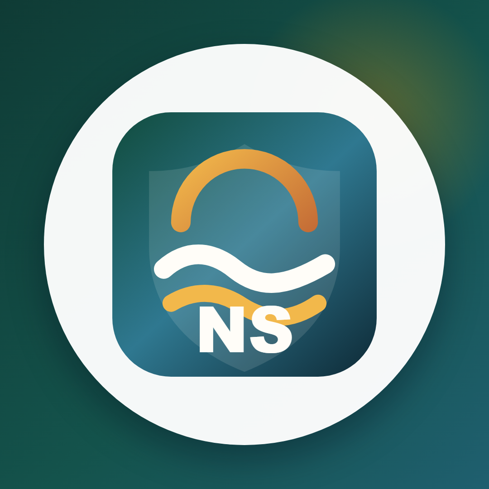

Building practical overdose-prevention access through charity work.
Barry Billcliff's nonprofit work is focused on reducing harm where overdose risk is highest: getting people closer to fentanyl test-strip education, naloxone/Narcan awareness, recovery-resource navigation, and community partners that can respond with dignity instead of stigma.

Harm-reduction outreach means practical tools, education, referral pathways, and follow-through.
NH Helping Hands And Phoenix Rising Initiative
Barry helps lead and organize charity infrastructure around NH Helping Hands and Phoenix Rising Initiative, including grant preparation, partner coordination, compliance documentation, resource planning, and public-facing harm-reduction education.
Grant-Ready Operations
The work includes the serious backend pieces most people never see: SAM.gov and Grants.gov readiness, federal portal access, JustGrants preparation, CAGE/UEI-related documentation, board and officer records, support letters, and partner materials that make a charity effort fundable.
Primary mission
Fentanyl test strips, Narcan awareness, and real-world access.
The central goal is straightforward: help get fentanyl detection strips and naloxone/Narcan education into places where they can save lives, including recovery centers, rehabilitation programs, outreach partners, shelters, homeless-service settings, and community groups that serve people at higher overdose risk.
That work is not about pretending drug use is safe. Fentanyl test strips cannot guarantee that any supply is safe, and naloxone/Narcan does not replace emergency medical care. The point is harm reduction: give people practical information, reduce fatal risk where possible, encourage emergency response, and connect people and families to treatment, recovery, housing, public-health, and basic-needs resources.

Fentanyl test-strip education and safer-use awareness where lawful and partner-approved.

Naloxone/Narcan awareness, overdose recognition, and emergency-response education.
Partner network
Local groups built around recovery access and overdose prevention.
The broader partner network includes newly organized or organizing community groups such as Sandown Rural Recovery Support Network, Manchester Overdose Prevention Collaborative, North Shore Harm Reduction Collaborative, Merrimack Valley Recovery Access Alliance, and Kingston Community Recovery Alliance. Their planned work centers on education, referral navigation, outreach coordination, recovery-resource access, and practical support for families and communities affected by substance use.
NH Helping Hands
Practical charity infrastructure and community-help orientation.
Phoenix Rising Initiative
Recovery access, harm-reduction education, and grant-focused organizing.
Sandown Rural Recovery Support Network
Rural recovery support, overdose-prevention education, and referral coordination.
Manchester Overdose Prevention Collaborative
Community training, public-health outreach, and overdose-prevention awareness.

North Shore Harm Reduction Collaborative
Safer-use education, referral pathways, and community harm-reduction planning.
Merrimack Valley Recovery Access Alliance
Recovery-resource access, family support, and local referral coordination.
Same public profile, fuller context
Public service belongs beside the record-correction work.
This site gives Barry's harm-reduction and charity leadership the same first-tier visibility as the sourced OSHA appeal update and the antique-money case dismissal timeline, because the public record should include both the corrected controversies and the community work that helps define the larger story.